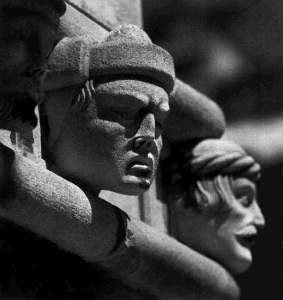

Juraj Dalmatinac, kipar i graditelj (Zadar, poč. XV st. – Šibenik, 1473/75). O njegovoj mladosti, školovanju i prvim radovima zna se vrlo malo, a nije mu poznato ni porodično ime (prezime Orsini koje se navodi u starijoj literaturi prisvojio je tek njegov sin). Do 1441, kad dolazi u Šibenik, živi u Veneciji, gdje ima obitelj i kuću. U to doba već je afirmirani umjetnik pa je vjerojatno on umjetnik kojega Filarete, a po njemu i Vasari, spominju kao kipara »Schiavona koji je učinio značajne stvari u Veneciji«. Njegovi radovi u Veneciji nisu dokumentirani. Na osnovi stila radova u domovini može se zaključiti da je radio u radionici braće kipara Giovnnija i Bartolomea Bona.
Pretpostavlja se da je bio njihov suradnik kod izrade kipova i ukrasa na Porta della Crta, a kao samostalni rad pripisuje mu se reljef sv. Marka s bratimima u luneti portala Scuole di S. Marco. Neki detalji s Arca Foscari Duždeve palače vrlo su slični konstruktivnim i dekorativnim rješenjima koja će Juraj Dalmatinac ostvariti poslije na šibenskoj katedrali. U Veneciji Juraj Dalmatinac usvaja stil kićene gotike (tzv. gotico fiorito), koji je tada bio na vrhuncu, ali sudeći po njegovim prvim radovima u domovini, prihvaća i elemente novog stila – toskanske renesanse, tek prodrle u grad na lagunama. Stvaralačka i individualna sinteza gotike i renesanse prisutna je u cijelom Jurjevu opusu te je on prvi i najosebujniji predstavnik mješovitog gotičko-renesansnog stila koji obilježava regionalnu umjetnost Dalmacije druge polovice XV i početka XVI stoljeća.
Juraj djeluje u Dalmaciji kao graditelj i kao kipar 1441-73. Pozvan je u Šibenik iz Venecije da nastavi gradnju katedrale započete 1431. u stilu venecijanske gotike. Do njegova dolaska bili su izgrađeni bočni zidovi, dio pročelja, dva portala, a izgradnjom kapela bio je definiran izgled bočnih brodova. Svojom koncepcijom istočnog dijela crkve Juraj je katedrali dao monumentalan oblik, dodavši joj poprečni brod i kupolu nad križištem, tri polukružne apside, krstionicu i sakristiju. Apside je započeo zidati 1443 (bilo je potrebno ukloniti neke zgrade na tom mjestu), kako je zabilježeno na svečanom natpisu koji pridržavaju dva renesansna putta na pilastru do sjeverne apside. Tu je i majstorov potpis: HOC OPUS CUVARUM FECIT MAGISTER GEORGIUS MATHAEI DALMATICUS. Apside nije sagradio na uobičajen način kamenim kvadratima, već sistemom profiliranih pravokutnih kamenih okvira u koje su umetnute veće ploče ukrašene plitkim nišama s perspektivno prikazanim kanelirama i školjkom na vrhu. Na frizu koji teče oko apsida isklesao je sedamdeset i jednu ljudsku glavu, galeriju realističnih pokreta tipova ljudi, volumenom i detaljima precizno definiranog karaktera i izraza. U unutrašnjosti katedrale uzdigao je svetište za šest stepenica i podigao četiri velika stupa s kapitelima od kovrčavog lišća kojima će kasnije biti podignuta kupola na osmerostranom tamburu.
Njegovo su djelo i izražajni kipovi apostola Petra i Pavla u tabernakulima na vrhu sjevernog portala te ležeći kip biskupa Šižgorića i dva putta u crkvi. Krstionica katedrale sagrađena je 1443. pod južnom apsidom. Taj mali prostor, nadsvođen kupolom sastavljenom od devet velikih kamenih ploča, ispunjen je bogatim gotičko-renesansnim ukrasom. Na pojasnicama iznad nosećih pilastara su izražajni likovi proroka pod gotičkim tabernakulima, a u poljima između njih renesansni anđeli u plitkom reljefu. U sredini prostora tri gola dječaka puna životne snage pridržavaju krsni zdenac. Sakristiju katedrale gradio je 1452-54 (kamene dijelove, prema njegovom modelu iz sadre, izrađivali su klesari na Braču već 1450); podigao ju je na tri stuba da bi prolaz pod njom bio slobodan, a zidove koji nose bačvasti svod sagradio je dosljedno primjenjujući svoj originalni princip montaže tanjih kamenih ploča utorenih u jači kameni okvir.
Usporedo s radovima na šibenskoj katedrali, koju će ostaviti nedovršenu, Juraj Dalmatinac preuzima i poslove u drugim dalmatinskim i talijanskim gradovima...